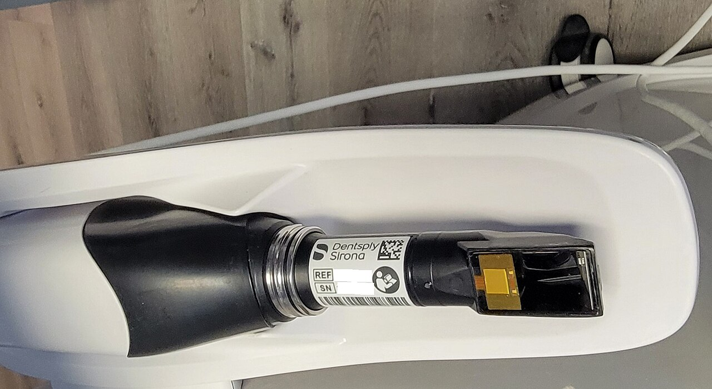

Kanal tedavili
her dişe
post şart mı?
her dişe
post şart mı?
Uygun vakalarda alternatif:
Endokron.
01Endokron nedir?
Tek parça,
postsuz çözüm.
postsuz çözüm.
02Dijital ölçü

Ağız içi tarayıcı (temsili) · Foto: Викидим, Wikimedia Commons, CC BY 4.0
Bu derin kaviteyi
ne kadar doğru
kopyalıyor?
ne kadar doğru
kopyalıyor?
03Çalışma
Bir in vitro çalışma

2 mm

5 mm
2
diş tipi
×
2
derinlik
×
3
tarayıcı
×
11
tekrar
132tarama
TRIOS 5 · DEXIS IS 3800 · iTero Element 5D
04Bulgular
Aksiyel duvar
Molar · medyan sapma (µm) · düşük = daha doğru
04Bulgular
Kavite tabanı
Premolar · medyan sapma (µm)
05Klinik eşik

Çakıştırma sonrası renk kodlu sapma haritası (çalışmadan, temsili örnek)
Derin (5 mm) premolar · kavite tabanı · ortalama (µm)
06Neden?
Işık tabana
ulaşamıyor.
ulaşamıyor.
07Pratik ipucu
Derin premolar
endokronda:
endokronda:
1
Taramadan sonra kavite tabanını kontrol et
2
Eksik varsa tekrar tara
3
Doğru ölçü = doğru uyum
Kaydet,
paylaş.
paylaş.
Kaynak: Diş tipi ve pulpa odası derinliğinin farklı ağız içi tarayıcılarla alınan endokron taramalarının doğruluğuna etkisi üzerine in vitro çalışma.